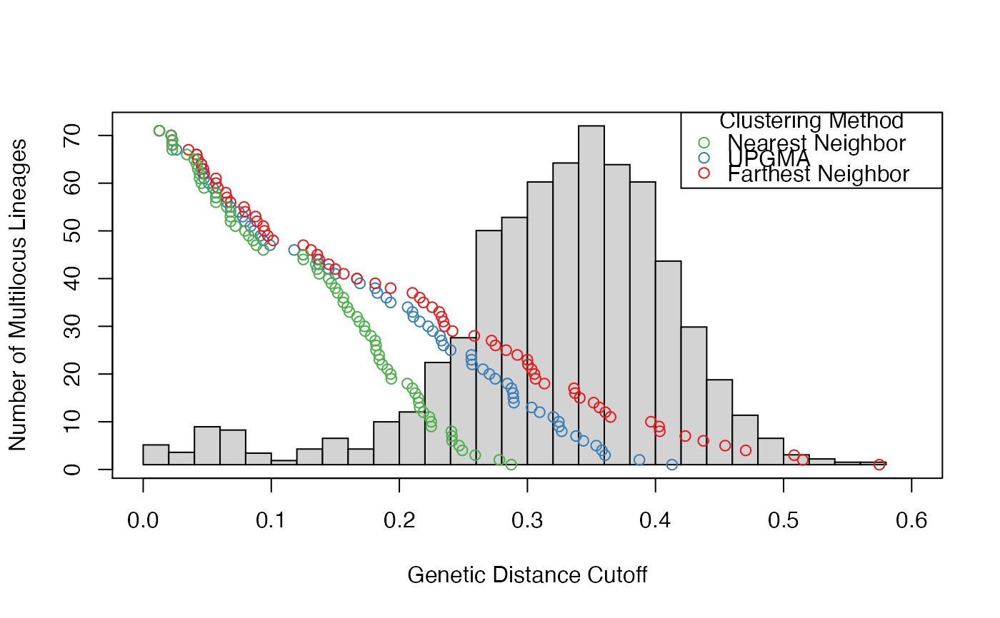

Given a series of thresholds for a data set that collapse it into one giant cluster, this will search the top fraction of threshold differences to find the largest difference. The average between the thresholds spanning that difference is the cutoff threshold defining the clonal lineage threshold.
Arguments
- thresholds
a vector of numerics coming from mlg.filter where the threshold has been set to the maximum threshold theoretically possible.
- fraction
the fraction of the data to seek the threshold.
Note
This function originally appeared in doi:10.5281/zenodo.17424 . This is a bit of a blunt instrument.
References
ZN Kamvar, JC Brooks, and NJ Grünwald. 2015. Supplementary Material for Frontiers Plant Genetics and Genomics 'Novel R tools for analysis of genome-wide population genetic data with emphasis on clonality'. DOI: doi:10.5281/zenodo.17424
Kamvar ZN, Brooks JC and Grünwald NJ (2015) Novel R tools for analysis of genome-wide population genetic data with emphasis on clonality. Front. Genet. 6:208. doi: doi:10.3389/fgene.2015.00208
Examples
data(Pinf)
pinfreps <- fix_replen(Pinf, c(2, 2, 6, 2, 2, 2, 2, 2, 3, 3, 2))
pthresh <- filter_stats(Pinf, distance = bruvo.dist, replen = pinfreps,
plot = TRUE, stats = "THRESHOLD", threads = 1L)

# prediction for farthest neighbor
cutoff_predictor(pthresh$farthest)
#> [1] 0.1132221
# prediction for all algorithms
sapply(pthresh, cutoff_predictor)
#> farthest average nearest
#> 0.1132221 0.1084407 0.1092773